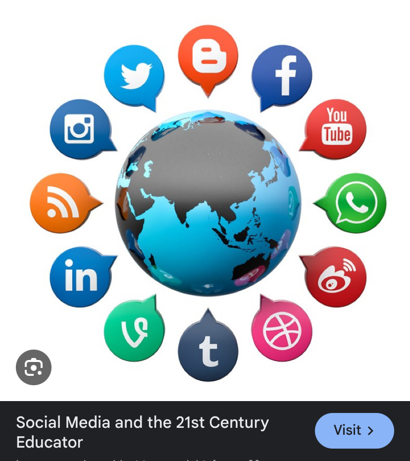
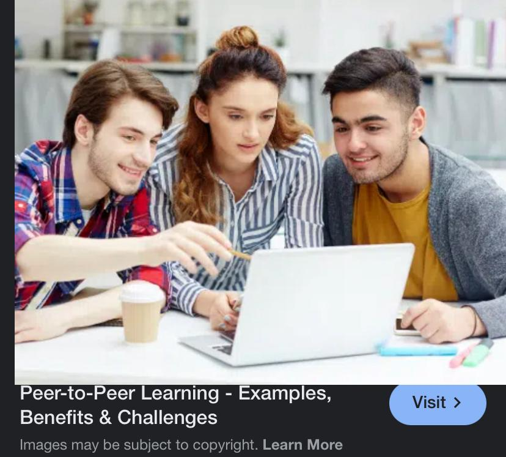
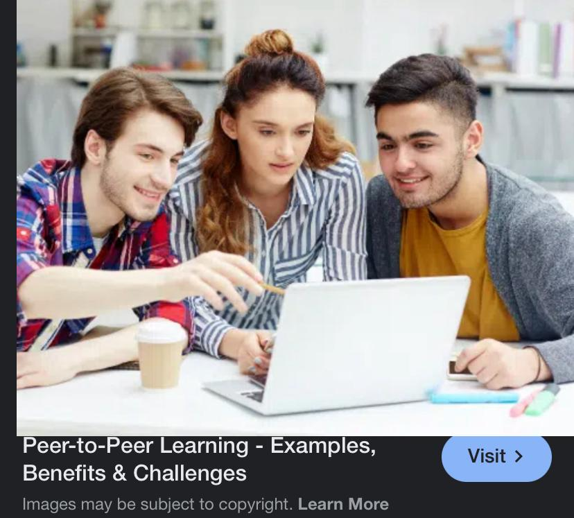

Social Media and 21st Century Education by RAHIA N MATIAS

INTRODUCTION
My Name:
Rahia
Social Media and 21st Century Education:
Social media in education refers to the digital platforms enabling communication and online collaboration...
Our Ideal Role Image:

Introduction Podcast
Integration of Social Media in Modern Education:
1. Learning Tools
- Virtual Classroom
 Visit for more content
Visit for more content
- Online Discussions

 Visit for more content
Visit for more content
- Resource Sharing Visit for more content
2. Communication Channels
- Student-Teacher Interaction

 Visit for more content
Visit for more content
- Peer-to-Peer Learning
 
Visit for more content

Visit for more content
- Parent-Teacher Communication

 Visit for more content
Visit for more content
Benefits of Social Media and 21st Century Education
Benefits of Social Media in Education
- Collaboration and Communication: Enables real-time collaboration between students and teachers.
- Student Engagement: Uses familiar platforms students already understand.

Benefits of 21st Century Education
- Personalized Learning: Adaptive learning technologies that adjust to student pace.
- Digital Literacy: Prepares students for technology-driven workplaces.
Challenges of Social Media and 21st Century Education
Challenges of Social Media in Education
- Distraction and Focus Issues: Students are easily distracted by non-educational content.
- Information Reliability: Spread of misinformation and fake news.
Challenges of 21st Century Education
- Digital Divide: Unequal access to technology.
- Teacher Preparation: Need for continuous professional development.
Conclusion
Social media's integration into education represents a paradigm shift in how we approach teaching and learning...